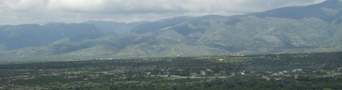

|
THIS IS AN ARCHIVED SITE - ESTE ES UN SITIO ARCHIVADO |
|
Please visit
https://www.realde14.com for the current
site |
|
Visite
https://www.realde14.com para ver el sitio actual |
| Home |
Town |
Area |
History |
Links |
Matehuala to San Bartolo, via Sacramento.
| Miles |
Kms. |
|
| 0.0 | 0.0 | Begin log at the church at Sacramento. Go left on the road to the left of the church. |
| 2.5 | 4.0 | Top of pass over a low range. View of Sacramento behind and La Joya ahead. |
|  |
||
| 4.1 | 6.6 | Enter La Joya. Continue straight on. (There is a road to the right, sign says “S.M. del Rincon 7 km”) |
| 7.8 | 12.6 | Tanque Colorado. Keep right at the little plaza. There is another road to the left said to go to the Matehuala highway. |
| 8.6 | 3.9 | Cross the aqueduct. Here it is an underground stone channel. This is an older part of the system supplying water from San Bartolo to Matehuala. |
| 9.4 | 15.2 | Enter northern side of Los Chilares. Take road to right up the canyon to San Bartolo following the big blue water supply pipe. Some of the road is paved and work continues on other parts. |
| 14.1 | 22.8 | Entering San Bartolo (elev: 1800 m). The village is strung out along the canyon bottom with almost tropical vegetation. Large trees and terraced orchards abound. On the left the blue pipe emerges from a tunnel in the mountain. |
| 14.2 | 23.0 | Road to the left goes to the Jardin de Ninos and large flat area. Possible good camp site. Continue straight. |
| 14.7 | 23.8 | End of road at the primary school and church.. Behind the church the blue pipe comes from higher in the mountains and enters the previously mentioned tunnel along with the flow of the arroyo. A trail leads through the tunnel to the lower end, a total distance of less than 100 meters. At the lower end is a waterfall and a pool where the local kids play. |
| Return to
northern side of Los Chilares. |
||
| Miles | Kms. | |
| 0.0 | 0.0 | Turn right into the village |
| 0.2 | 0.3 | At the southern side of Los Chilares, keep right on the road to La Maroma. |
| 0.4 | 0.6 | Keep left at the arroyo. The next few miles ascends through low hills to the base of the mountains. The road then becomes steeper and rougher. Four wheel drive recommended. |
| 8.1 | 13.1 | Top of high pass (elev: 2400 m) over the ridge before dropping into the green wooded valley of La Maroma (elev: 2100 m). La Maroma can be seen below at a distance of a couple of miles. There is good water and camping there. On the hill above the pass are groves of oak trees. From here Cerro el Barco (elev: 3060 m) can be seen 9 km. to the west. |
|
|
||
| Miles | Kms | |
| 0.0 |
0.0 |
Keep right at the tienda on the road to La Presa. |
| 1.5 |
2.4 |
Sign says “La Presita”. Turn right, pass the blue church on the right and continue straight through a mile or so of pueblas. (The road from the left may have come from Tanque Colorado(?)) |
| 4.3 |
7.0 |
A good road enters from the left rear (from Tanque Colorado (?)). Continue on straight. |
| 5.0 |
8.1 |
Turn left on pavement in the village of La Biznaga. |
| 6.4 |
10.4 |
Charcas
–
Matehuala highway at about Km. 160. Turn left for Matehuala. Coming
from
Matehuala, a sign indicates the turn to La Biznaga. To the right the
highway goes to Charcas and returns to Real de Catorce via Vanegas (see the Mezcal Factory Tour roadlog). |
| 12.4 |
20.1 |
Intersection with Hwy 57. Left to Matehuala. |